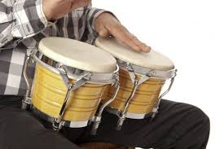
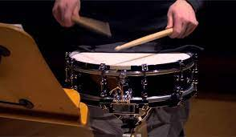
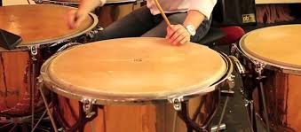
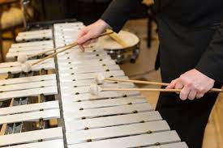

PERCUSIÓN
¿Qué caracteriza los instrumentos de Percusión?
Un instrumento de percusión es un tipo de instrumento musical cuyo sonido se origina al ser golpeado o agitado. Es la forma más antigua de instrumento musical.La percusión se distingue por la variedad de timbres que es capaz de producir y por su facilidad de adaptación con otros instrumentos musicales. Algunos de los instrumentos de percusión más famosos son el redoblante (tambor) y la batería.. A continuacuón, os mostramos algunos de ellos:
Batería
La batería está compuesta por un conjunto de tambores, cubiertos por dos parches que están hechos comúnmente de un material derivado del plástico y dependiendo del tambor es un tipo de parche u otro. Hay desde parches muy básicos hasta los parches más complejos, compuestos por una capa de un plástico base, otra con aceite que guarda el sonido y crea un "reverb" y otra que es la sección de golpeo hecha de un material derivado del látex para la mayor duración del mismo. Un tambor está compuesto por dos parches, uno de golpeo (en la parte superior) y otro resonante (en la parte inferior). Estos tambores pueden variar su diámetro, afectando al tono, y la profundidad, variando la sensibilidad sobre el parche de resonancia. Además la batería también es acompañada por los imprescindibles platillos, otros accesorios relativamente comunes (tales como el cencerro, panderetas, bloques de madera, entre otros) y ocasionalmente cualquier objeto que produzca un sonido con cierta músicalidad y del gusto del baterista.
El cuerpo (Body Percussion)
La percusión corporal se puede realizar sola o como acompañamiento de música y/o danza . Ejemplos de tradiciones populares de países que incorporan percusión corporal incluyen saman indonesio , música de axila etíope , palmas en flamenco y el hambone de los Estados Unidos . La percusión corporal es un subconjunto de la "música corporal".
Bongos
El bongó es un instrumento membranófono conformado por un juego de dos tambores pequeños hechos de madera ligeramente troncocónicos, uno más pequeño que el otro, unidos por una pieza de madera. Sus bocas superiores —las de diámetro mayor— están cubiertas por cuero sólido que se tensa con un anillo de metal de colo r negro a través de las llaves metálicas del bongó. El músico que toca el bongó se llama —bongosero—. El bongó se percute con las manos, para lo cual se debe colocar entre las rodillas, sentado, ubicando el parche más agudo (el de menor tamaño) a su izquierda en un ángulo de 45° para obtener su sonido.
Caja
La caja o caja clara es un instrumento de percusión de sonido indeterminado. Según la clasificación Hornbostel-Sachs , pertenece a la familia de los membranófonos. Es un tambor, usualmente de poca altura, con hebras llamadas bordones dispuestas diametralmente en la membrana inferior, las cuales le proporcionan su característico timbre más estridente y metálico que el del tambor común. Al músico que toca la caja se le llama a su vez, por asociación, caja, y tiene formación de percusionista. Este instrumento se usa en orquesta, en bandas de música y es una parte fundamental de la batería.
Timbales
Un timbal o tímpano (en plural italiano: timpani) es un instrumento musical membranófono de sonoridad grave, que puede producir golpes secos o resonantes. Se le utiliza golpeando los parches con un palillo o baqueta especial llamada «baqueta de timbal». Está formado principalmente con un caldero de cobre, cubierto por una membrana.
Xilófono
El xilófono (pronunciado /si'lofono/, del griego ξύλον xylon madera y φωνή phōnē voz) es un instrumento musical de percusión. Cada lámina se afina según un tono específico (nota musical) de la escala cromática . Como se puede afinar, se trata de un laminófono de sonido determinado. El orden de las láminas es similar al orden del teclado de piano.
